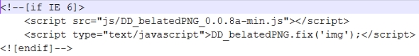

IE6双倍边距bug，块元素设置margin-left:10px;float:left；的时候产生距左边产生20px的边距。其他浏览器正常
解决方案是在float的标签样式控制中加入 _display:inline;
IE6中普通的png图片还会出现一个不透明的背景，此时需要使用png-8格式的图片就可以解决,也可以使用js,如下图
但是对于body的背景图片又无效了，此时可以使用如下代码解决
body{
height:300px;
_background: none;
filter:progid:DXImageTransform.Microsoft.AlphaImageLoader(src="xxx.png" ,sizingMethod="crop");
}
解决方法：（条件注释）缺点是在IE浏览器下可能会增加额外的HTTP请求数。
可通过加入 CSS 属性 -webkit-text-size-adjust: none; 解决。